Raivin Workflow
In this workflow, you will explore recording MCAPs from the Raivin which will be used to create and annotate datasets with 2D and 3D annotations. Once the dataset has been annotated, you will start training and validating your Fusion model using the dataset captured. Finally, you will deploy the model back to the Raivin for inference.
Capture with a Raivin
If you have a Raivin, follow this tutorial to see how to capture and upload datasets into EdgeFirst Studio. Use your browser to connect to the Web UI of the remote device, enter the following URL https://<hostname>/.
Note
Replace <hostname> with the hostname of your device.
You will be greeted with the Raivin Web UI Main Page page.
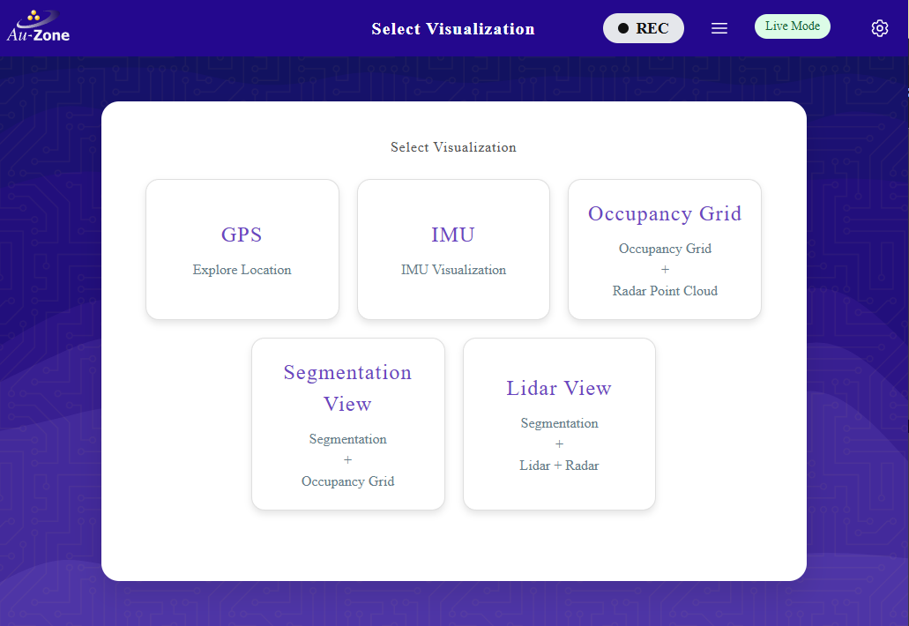
Record MCAP
MCAP recordings can be started and stopped using the Recording Button at the device's top navbar. It is to the left of the MCAP Details hamburger button, which is used to open the MCAP Details Modal.

Both of these buttons are available on every page of the Maivin, Raivin, and other edge devices running the EdgeFirst middleware.
Note
You must close all modals to be able to click the "Recording" and "Details" Buttons.
For more information about recording MCAPs, please read the MCAP Recording section.
Start Recording
To start a recording, simply click the "Recording" button to begin capturing data.

Note
It may take up to 30 seconds for a recording to start, depending on topic tracked.
Low Disk Space
If there is not enough room on the drive to record an MCAP, recording will automatically stop and you will get a "Low Disk Space" error.

If you were to open the MCAP Details Modal while recording, you would see a new MCAP file in the MCAP list.

Stop Recording
To stop recording, click the "Recording" button a second time.
Download MCAP
To download an MCAP recording from the device, click the MCAP Details hamburger button  to open the MCAP Details Modal.
to open the MCAP Details Modal.
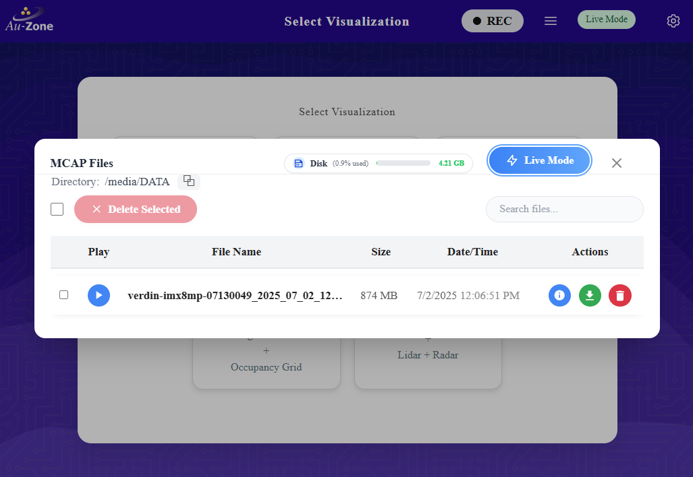
Use the "Download" button in the row containing the name of the MCAP file you want to download, which will download the MCAP file to your local machine.
You can also use an SSH client to copy files off the Raivin.
Upload MCAP
To upload an MCAP Recording into EdgeFirst Studio, first login to EdgeFirst Studio. Once logged in to EdgeFirst Studio, navigate to the "Data Snapshots" under the tool options.

Note
A project has already been created intended for object detection. This step has been covered in Getting Started.
Once you are in the "Data Snapshots" page, upload the recorded MCAP by clicking "From File" which opens a new window dialog for selecting the MCAP downloaded in your PC.
EdgeFirst Datasets
You can also drag and drop EdgeFirst Datasets ZIP and Arrow files in the "Data Snapshots".
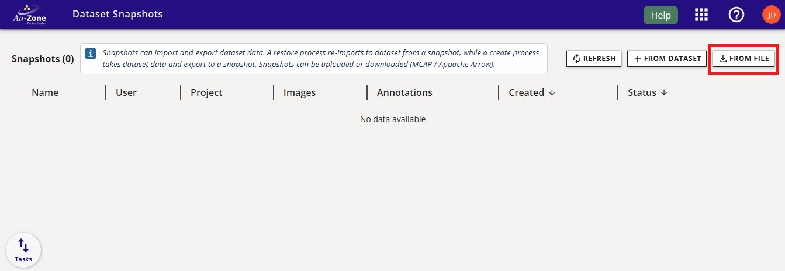
Once the MCAP file is selected, this would start the upload progress in EdgeFirst Studio. This upload progress may take several minutes depending on the size of the MCAP. Once the upload is complete, the status will be shown like the figure on the right.
| Upload Progress | Completed Upload |
|---|---|
 |
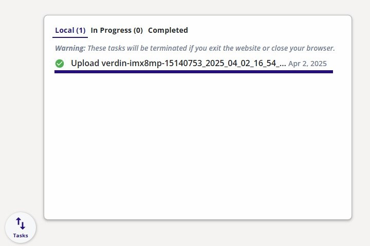 |
Restore Snapshot
The snapshot restoration process involves several dataset transformations such as the frame rate specification, depth map generation, and auto-annotations. More information can be found in Studio.
COCO Annotations
The labels supported during the auto-annotation process for the Fully Automatic Ground Truth Generation are the COCO labels listed.
The created snapshots can be found under "Data Snapshots".
To restore the snapshot, click on the snapshot context menu and select "Restore".

Restoring a snapshot will create a new dataset entirely with annotations. Specify the project to contain this new dataset and specify the name and the description of the dataset. Furthermore, toggle the "AI Ground Truth Generation" to auto annotate the dataset samples. The rest of the settings can be kept in their defaults for this tutorial. Click "Restore" to start the restoration process.

The snapshot restore process can be found under the project datasets.

Once completed, the dataset will now contain annotations that resulted from the auto-annotation process.
Next navigate to the gallery of the dataset by clicking on the image preview on the dataset card. To correct any mistakes from the auto-annotation process, follow the tutorials described under manual annotations.
Finally, split the dataset into training and validation groups.
Train a Fusion Model
Now that you have a fully annotated dataset with a training and validation partition, you can begin training your model. This will briefly show the steps for training a model, but for an in depth tutorial, please see Training Fusion Models.
Navigate back to the "Projects" page. You can go back to the "Projects" page by clicking the Apps Menu waffle button on the top right of the Navigation bar. Click the first selection to take you to the "Projects page".
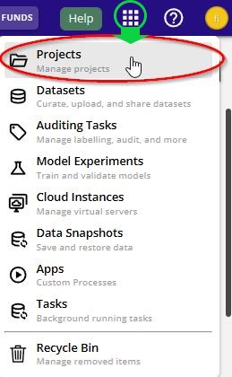
From the "Projects" page, click on "Model Experiments" of your project.
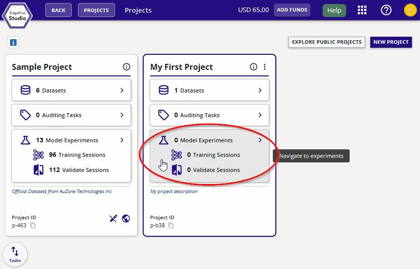
Create a new experiment by clicking "New Experiment" on the top right corner. Enter the name the description of this experiment. Click "Create New Experiment".
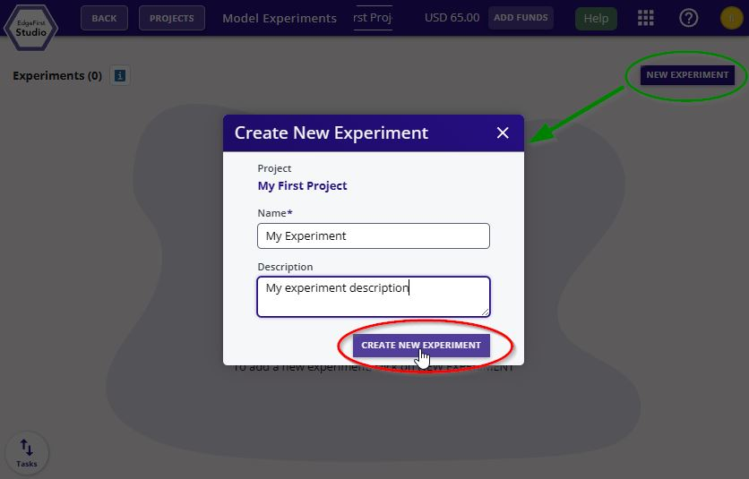
Navigate to the "Training Sessions".
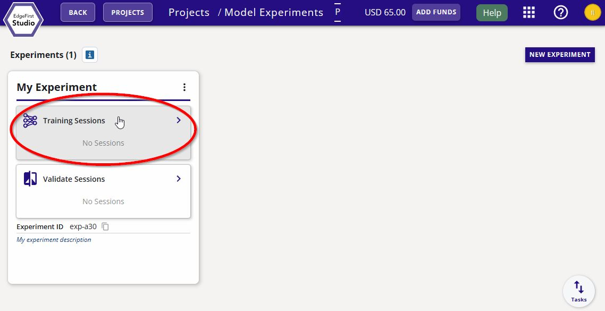
Create a new training session by clicking the "Actions" dropdown menu on the top right of the page and then click the "+ New" button.
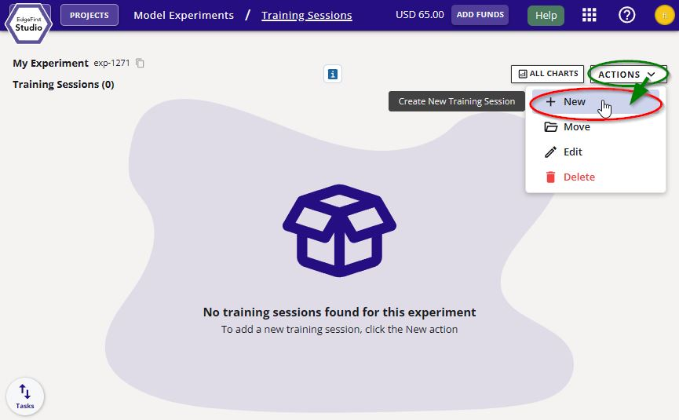
Follow the settings indicated and keep the rest of the settings by their default. Click "Start Session" to start the training session.
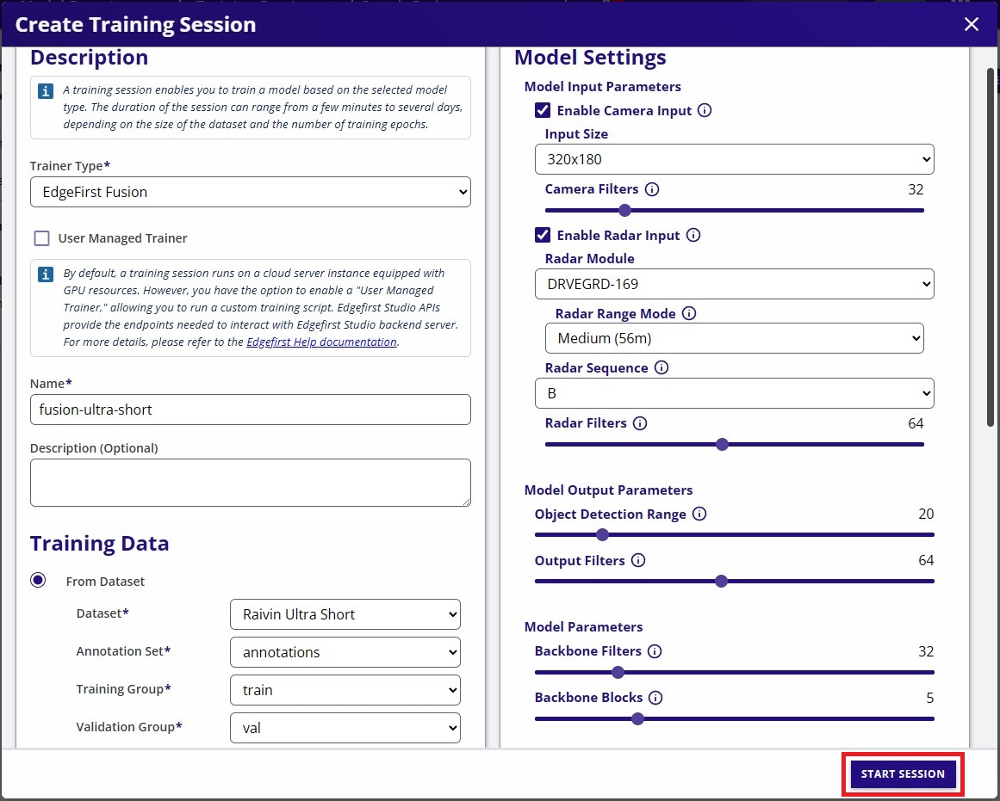
The session progress will be shown like the following below.
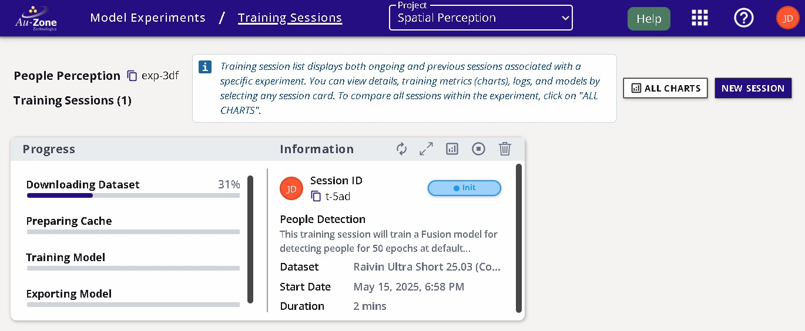
Once completed the session card will appear like the following below.
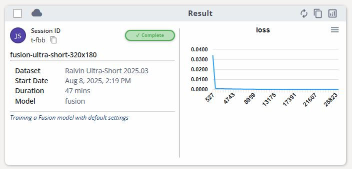
Click the training session card for more information.
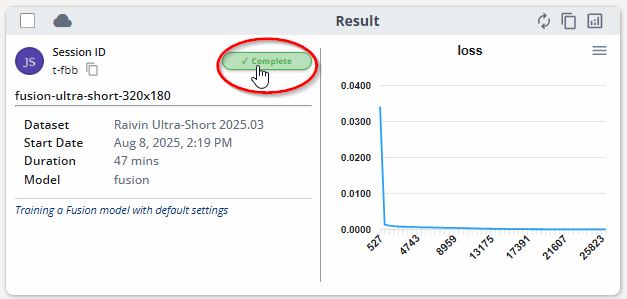
The trained models will be listed under "Artifacts".
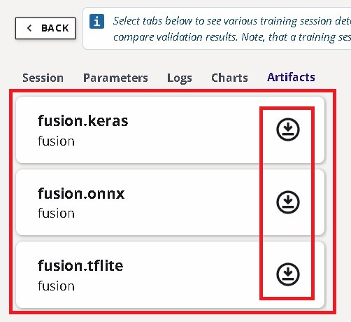
Validate Fusion Model
Now that you have trained a Fusion model, you can now start validating your model. This will briefly show the steps for validating a model, but for an in depth tutorial, please see Validating Fusion Models.
If you haven't already, click on the train session card for more information.
On the top right corner of the page, click on the "validate" button as indicated.
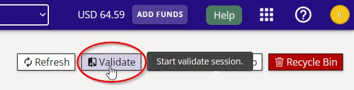
Specify the name of the validation session and the model and the dataset for validation. The rest of the settings were kept as defaults. Click "Start Session" at the bottom to start the validation session.
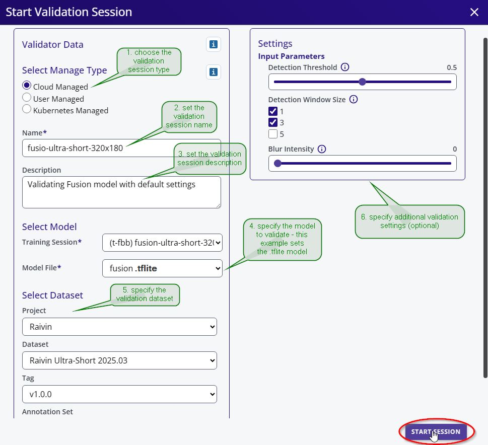
The validation session progress will appear in the "Validation" page as shown below.
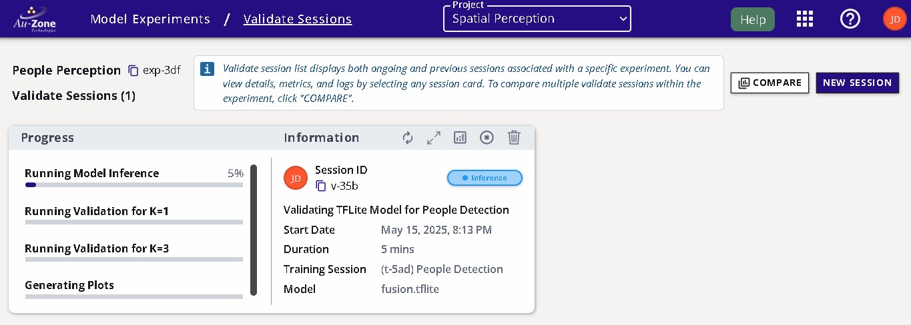
Once completed the session card will appear like the following below. The validation metrics are displayed as charts which can be found by clicking the view charts button as shown.
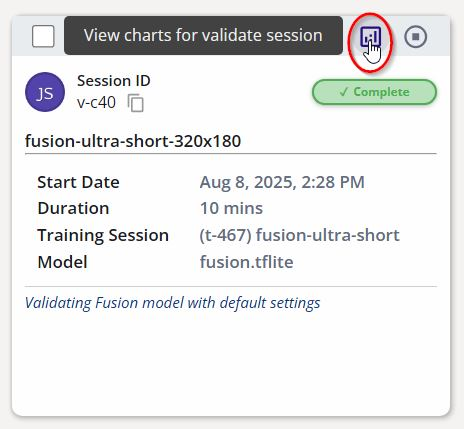
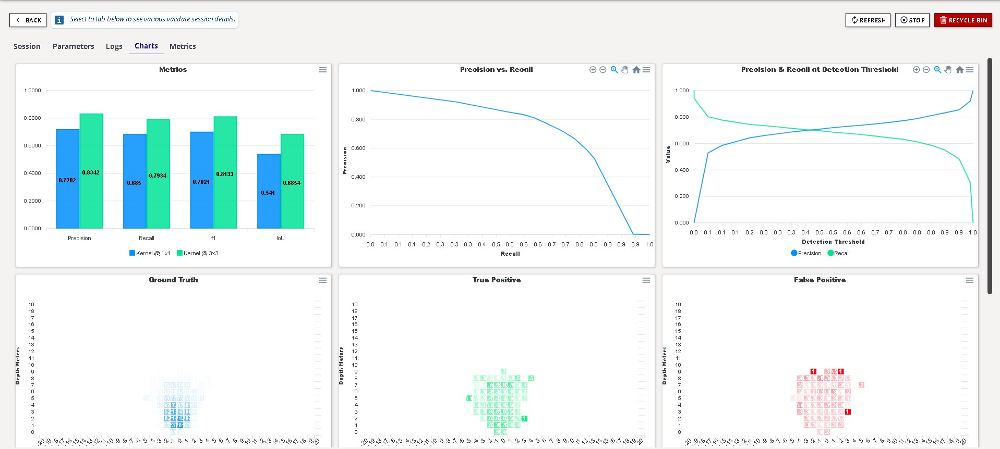
Deploy Fusion Model
This guide will showcase two methods of deploying the model.
- Live View (Segmentation App): Displays the live camera feed using the default model provided.
- MCAP Recording: Allows control of the recording options and provides download file options to replay the recording.
Download the Model
Download the model from EdgeFirst Studio into the device. There are two methods for downloading the model. The first method is to download the model from EdgeFirst Studio and then SCP the model file to the device. The second method is to use the EdgeFirst Client to download the model directly in the device.
As mentioned under the Training Outcomes section, the trained models can be downloaded by clicking the the training session card in EdgeFirst Studio.
This will open the session details and the models are listed under the "Artifacts" tab as shown below. Click on the downward arrow indicated in red to download the models to your PC. In this example, you will be deploying the TFLite model in the device.
Deployment Tab
You may have noticed the "Deployment" tab to the right of the "Artifacts" tab. This is a placeholder for future functionality, so please don't worry about it.
Once the model is downloaded in your PC, you can SCP the model to the device by using this command template.
$ scp <path to the downloaded TFLite model> <destination path>
An example command is shown below.
$ scp fusion.tflite torizon@verdin-imx8mp-15140753:~
This method expects you to have already connected to the device via SSH. The EdgeFirst Client can be installed via pip3 install edgefirst-client. You can verify the installation with the client version command.
$ edgefirst-client version
EdgeFirst Studio Server: 3.7.8-a50429e Client: 1.3.3
Next login to EdgeFirst Studio with the command.
$ edgefirst-client login
Username: user
Password: ****
You can download the model on the device using the download-artifact command as shown below.
$ edgefirst-client download-artifact <session ID> <model name>
For example edgefirst-client download-artifact t-fbb fusion.tflite. This command will download to the current working directory.
The download-artifact expects three arguments.
- session ID: Pass the trainer or validation integer session ID associated with the models.
- model name: Pass the specific model that will be downloaded to the device. Usually this is
mymodel.tflite.
You can find more information on using the EdgeFirst Client in the command line.
Visit the Web UI Service
Use your browser to connect to the Web UI of the remote device, enter the following URL https://<hostname>/.
Note
Replace <hostname> with the hostname of your device.
You will be greeted with the Raivin Web UI Main Page page.
For more information, please see the Web UI Walkthrough.
Update the Model Path
Next you will need to specify the path to the model in the device. You can either update the model path in the Web UI or via the command line.
Configure Model Settings
Whenever a new model has been updated, ensure that the model settings such as the score and the IoU thresholds are ideally set for this model.
Once you are in the Web UI main page, you can specify the path to the model by following the steps below.
Click the settings icon on the top right corner of the page.

Select "Fusion Settings".
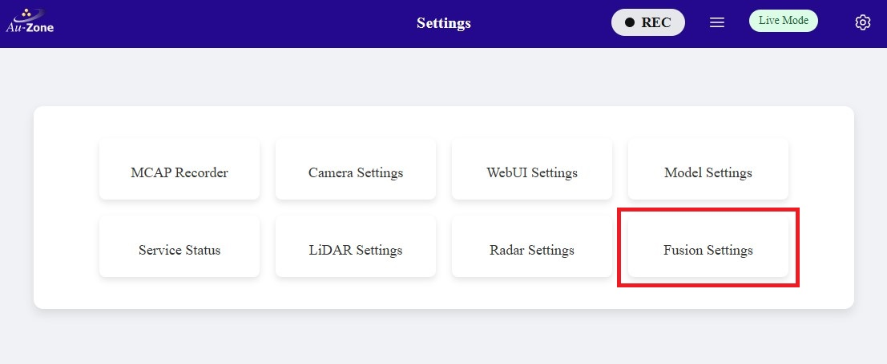
Configure the path to the model in your device as specified under "The Radar model". Once configured, click "Save Configuration" to save your changes.

To update the model path using the command line in the device, edit the following file using sudo vi /etc/default/fusion.
Edit the following line MODEL = "path/to/mymodel.tflite" to point to the specific path to your model. To edit, press i to enter into "Insert Mode". You should now be able to edit the lines. To exit "Insert Mode", press the ESC key on your keyboard. Next save and exit the file by typing :wq on your keyboard. More examples for using vi can be found here.
# The radar fusion model
MODEL = "path/to/mymodel.tflite"
Once the path to the model has been updated, restart the model service using sudo systemctl restart fusion.
Enable and Start the Camera and Model Services
Once the model path in the device is specified, ensure that all services are enabled. To verify, go back to the settings and click on the "Service Status" button.
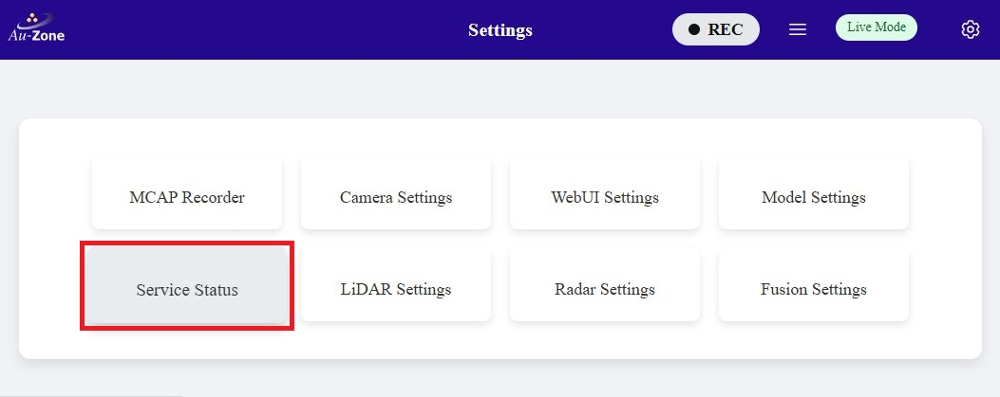
You will be greeted with the "Service Overview" page. Ensure that all services are enabled and running by toggling the "Enable" and "Start" buttons as shown. Only "Enable" the "recorder" service as shown. You will be using the recorder service in MCAP Recording.
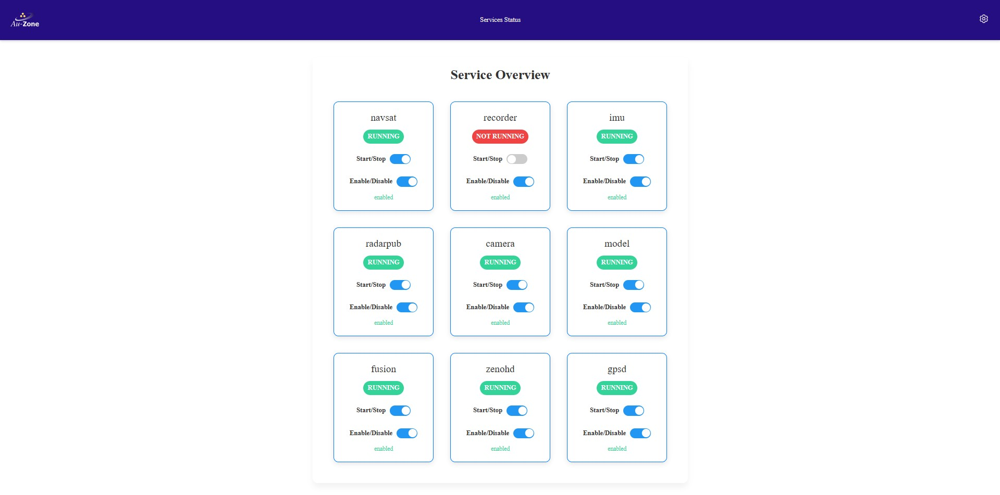
Live View (Segmentation App)
Now you will see a live inference of the model in the device. Once all services are enabled, go back to the main page and then select the "Segmentation View" application as shown.
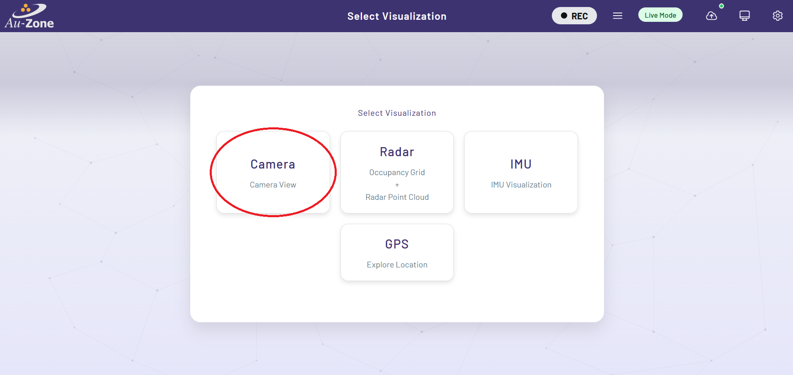
This will run inference on the model specified to generate segmentation masks of identified objects on the camera feed and highlights the radar point clouds on the occupancy grid marking the positions of the objects in world coordinates. Examples are shown below.
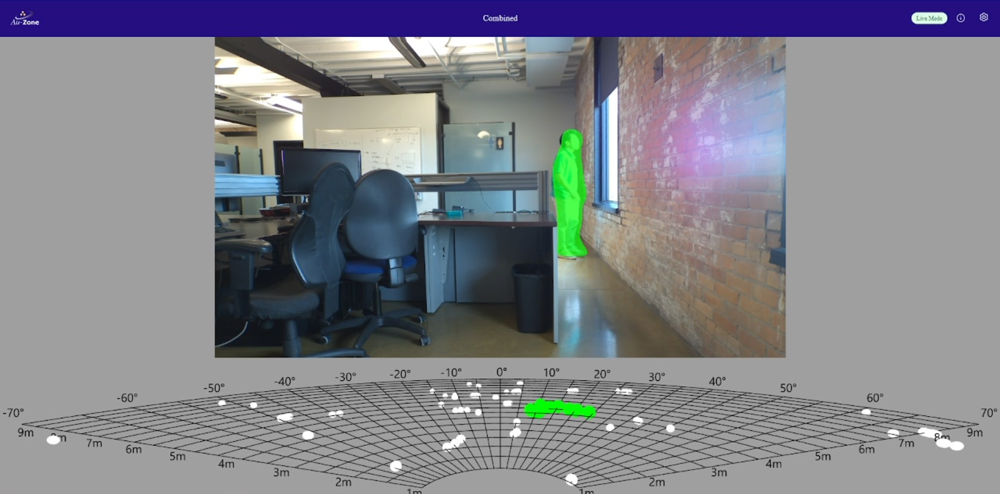
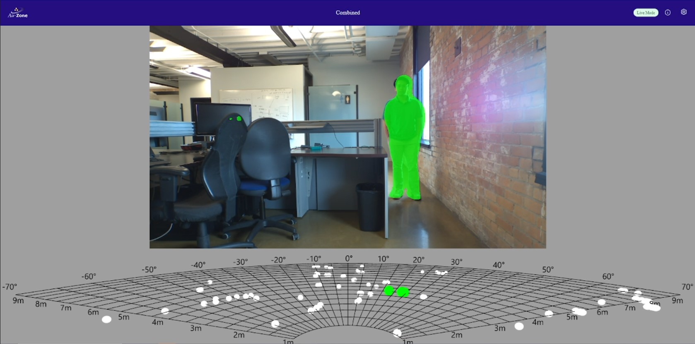
Now that the model has been updated, you can make new recordings using the model's inference and then visualize the recording using Foxglove Studio.
Inference Visualization in Foxglove
Once the MCAP recording has been downloaded, you can use Foxglove Studio to see the playback of MCAP recordings and the model inference. The following preview shows the segmentation mask from the model identifying the person in the frame (right) and the occupancy grid highlighting the radar clusters that correspond to the person's position in world coordinates.
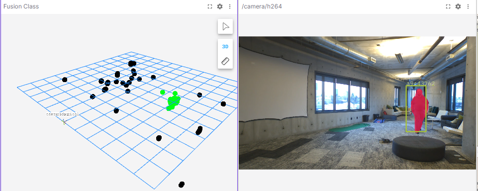
More information on the MCAP playback is provided in Foxglove Studio. Modifying panels and customizing various settings are also shown in Advanced Foxglove.
Next Steps
Explore other platforms by following the Jetson Orin Workflow next.